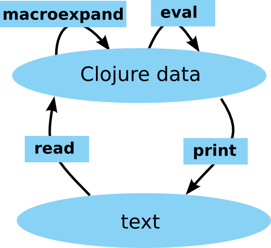
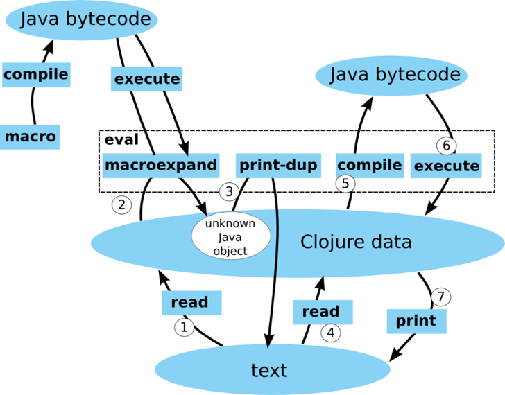

3 Speaker Tracks
(roughly: Production/Usage, Core Language/Library, Grab Bag/Esoterica)
Key Themes/Things Overheard
Libraries not Frameworks
Alternative Testing
Generative Testing
tests emit more than pass/fail (ex: documentation)
reminded me of Fitness testing
Datomic
Datomic Keynote - Rich Hickey
and
Evident Code at Scale - Stuart Holloway
Datomic comes out of Rich Hickey's reading of
"Out of the Tar Pit" - Moseley and Marks 2006
Peer Library - embedded in your application
Peer talks to Transactor which accepts transactions and processes them serially
Datomic Architecture

Currently runs on top of Amazon's DynamoDB
(will target other platforms in the future)
A database instance is immutable, enables heavy caching
Query engine is datalog
(a declarative lanugage, rules and data patterns)
You can invoke your code from queries
Deals in Facts
not Place Oriented Programming (PLOP)
"fundamental move away from places, places destroy a value"
Datom
Entity/Attribute/Value/Transaction (E/A/V/Tx)
Similar storage to RDF (subject, predicate, object)
"It's like Starcraft; as you move around you see more of the map."
"Over time, your database is like this: As you run your business, you discover more of the data"
Macros are Hard - David McNeil
Goes over the things you need to internalize when working with macros
You can get away with copy/paste for a while, but you'll eventually get bit without deeper understanding
Go back to basics and understand how the reader works
Naive Macro Understanding

Realistic Macro Understanding

Real World Cascalog - Federico Brubacher
Declarative Datalog-inspired syntax on top of Cascading
Cascading is thin layer on top of Hadoop's Map/Reduce for defining tuple data pipes
Pipes are fed by a Source Tap which connects a number of Operations to a Sink Tap
Operations are map side (filtering and transforming tuples) and reduce side (grouping and aggregation)
Storm - Nathan Marz
Realtime computation replacement for batch systmes like Hadoop
Topologies made of Spouts (streams of tuples) and Bolts (operations on streams)
Just added Distributed RPC capabilities
ClojureScript Anatomy - Michael Fogus
One of a number of presentations on ClojureScript
ClojureScript work is being leveraged to emit languages other than JavaScript
Programming with Values in Clojure - Alan Dipert
Start to see the "shapes" of data
One of a number of talks that advises you to "change how you think" when working with clojure
Brainfuck to Clojure compiler
+++++[->+]
+ + + + + [ - > + ]
(read-string "(+ + + + + [ - > + ])")
The brainfuck language emulates the tape in a Turing machine
What Sucks About Clojure (and why you'll love it anyway) - Chas Emerick
If you're considering using clojure, in 18 months what will you wish you'll know now
- Namespaces
declare- Dynamic scope
- Using STM (effectively) is hard
- You will read Clojure's source
- The JVM
- AOT Compilation
- (((OMG the parens)))
- Over-enthusiasm
- Big ball of mud/stacktraces
- Rich Hickey Bus Factor
Why Prismatic Goes Faster With Clojure - Bradford Cross
Inspiring presentation with more than a dash of NIH syndrome
Where to find more
Many slides on github
All presentations recorded and will be slowly released on DZone
Follow the @ClojureWest twitter account for release dates
Questions?